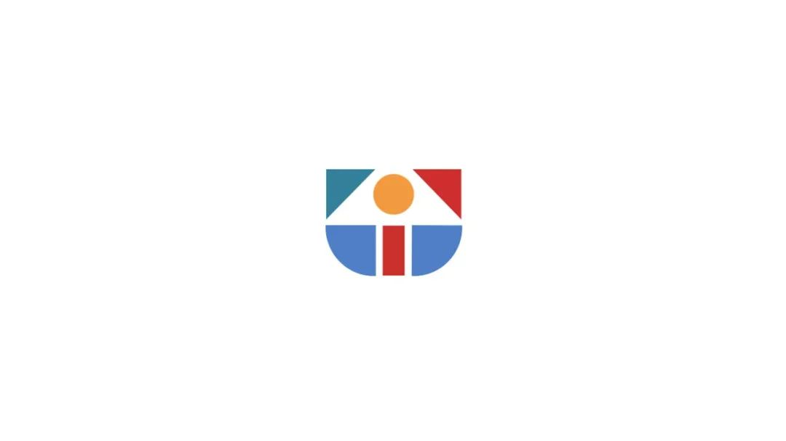

01
2.22（周三）
SeeDAO 公共岗位竞选演讲 - 1
（治理+技术条线）
19:00 - 22:00
扫码预约
02
2.23（周四）
SeeDAO 公共岗位竞选演讲 - 2
（品牌条线）
20:00 - 22:00
扫码预约
03
2.24（周五）
节点大会day1
21:00 - 23:00
第一届市政厅回顾报告 - Ricky
《数字城邦2049》 - 白鱼/唐晗
本次大会提案与投票方法介绍 - 咖啡
节点投票
04
2.25（周六）
节点大会day2
19:00 - 21:00
孵化器Season1回顾报告 - shawn
SeeDAO圆桌 一起来说 - Vincent
SGN赋能畅想 - 白鱼
节点投票

05
2.26（周日）
节点大会day3
13:00 - 15:00
最前线：其他的DAO都在干什么？- shawn
IRL：线下SeeDAO的建设 - Grace
Season2 SeeDAO展望 - 唐晗
节点投票